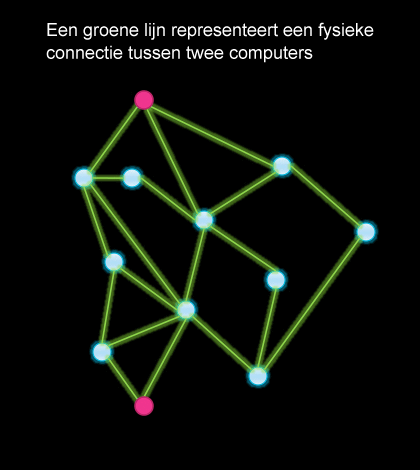

Netwerk-overtolligheid
Op deze pagina, ga je leren waarom de indeling van het internet overtollig is, dat wil zeggen dat er meerdere manieren zijn om van de ene plek naar de andere te komen.
Met alle gigantische hoeveelheden data die overal naar toe moeten, moet het internet betrouwbaar zijn. Hier hebben we voor gezorgd door vele overtollige verbindingen te bouwen in de fysieke systemen van het internet. Waar de informatie ook naartoe moet, er zijn altijd meerdere routes naar de eindbestemming. Zo blijft de rest van het internet nog steeds verbonden als een deel van het internet uitvalt. Dit verhoogt de fouttolerantie van het internet, de mogelijkheid om om fouten heen te werken. Het helpt daarnaast ook het internet uit te breiden naar meer mensen en apparaten.
-
 Beschrijf wat er gebeurd in deze animatie.
Beschrijf wat er gebeurd in deze animatie.
Een overtollig systeem bevat elementen met een back-up, in het geval dat een deel wegvalt.
Fouttolerantie is de mogelijkheid van een systeem om om problemen heen te werken.
Schaalbaarheid is de mogelijkheid van het internet om te blijven werken als het groeit
- Maak de volgende vragen.
 Wat is het minimum aantal verbindingspunten in dit netwerk dat kan stoppen met
werken voordat de zender en ontvanger niet meer kunnen communiceren? (Naast de zender en
ontvanger zelf natuurlijk.)
Wat is het maximaal aantal knooppunten in hetzelfde netwerk,dat kan wegvallen terwijl
de zender en ontvanger nog steeds kunnen communiceren?
Wat is het minimum aantal verbindingspunten in dit netwerk dat kan stoppen met
werken voordat de zender en ontvanger niet meer kunnen communiceren? (Naast de zender en
ontvanger zelf natuurlijk.)
Wat is het maximaal aantal knooppunten in hetzelfde netwerk,dat kan wegvallen terwijl
de zender en ontvanger nog steeds kunnen communiceren?